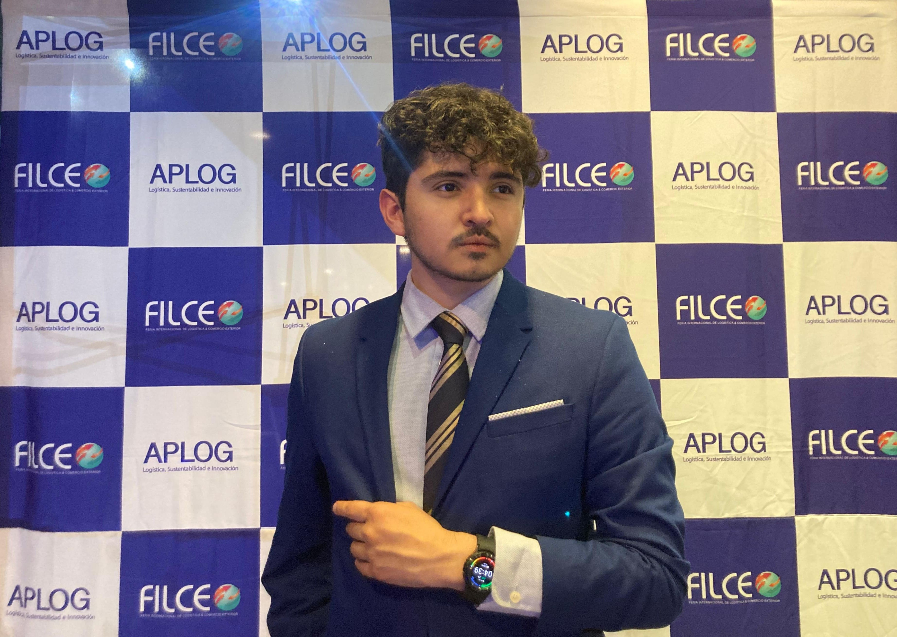

Sobre Mí
Soy un perfil técnico-comercial que implementa IA y automatización aplicadas al negocio. Fui AI Engineer en Samsung Electronics Chile, donde formé parte del equipo fundador del área de IA, y antes trabajé en el equipo de Ecosystem de IBM Chile.
Fundé y dirijo TechAI Summit, un congreso de IA y tecnología que en su primera edición tuvo más de 4.000 inscritos y reunió a gerentes de Google, Microsoft, AWS, Oracle, IBM y otras empresas líderes. También co-organizo FILCE, la mayor feria logística de Chile.
Me formé en Ingeniería en Informática en la Universidad Mayor y como Data Scientist en la UDD. Trabajo principalmente con Python, SQL, LLMs y agentes de IA, y me gusta llevar las soluciones de punta a punta: desde entender el problema hasta dejarlas funcionando.
Hablo español, inglés, portugués y lengua de señas chilena.
Si quieres conocer más sobre mi trabajo, escríbeme acá abajo.
